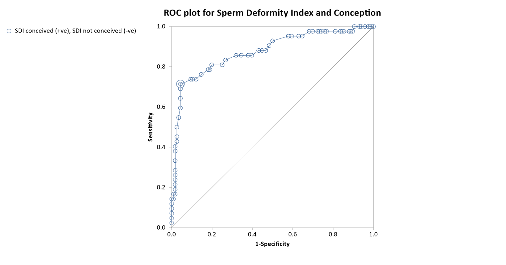

ROC Curve Analysis
Menu location: Graphics_ROC.
This plots a Receiver Operating Characteristic (ROC) curve from two sets of raw data.
ROC plots were first used to define detection cut-off points for radar equipment with different operators. These plots can be used in a similar way to define cut-off points for diagnostic tests, for example the level of prostate specific antigen in a blood sample indicating a diagnosis of prostatic carcinoma. Defining cut-off levels for diagnostic tests is a difficult process which should combine ethical and practical considerations with numerical evidence. It is wise to involve a statistician in studies of new diagnostic tests (Altman, 1991).
StatsDirect requires two columns of data for each ROC plot, one with test results in cases where the condition tested for is known to be present and another for test results in known negative cases. Sensitivity (probability of +ve test when disease is present) is then plotted against 1-specificity (probability of +ve test when disease is absent). See diagnostic test for more information.
When you have a number of ROC curves to compare, the area under the curve is usually the best discriminator (Metz, 1978).
StatsDirect calculates the area under the ROC curve directly by an extended trapezoidal rule (Press et al. 1992) and by a nonparametric method analogous to the Wilcoxon/Mann-Whitney test (Hanley and McNeil 1982). A confidence interval is constructed using DeLong’s variance estimate (DeLong et al, 1988).
Example
From Aziz et al. (1996).
Test workbook (SDI conceived, SDI not conceived).
The following are Sperm Deformity Index (SDI) values from semen samples of men in an infertility study. They are divided into a "condition" present group defined as those whose partners achieved pregnancy and "condition" absent where there was no pregnancy.
SDI (not conceived)
165, 140, 154, 139, 134, 154, 120, 133, 150, 146, 140, 114, 128, 131, 116, 128, 122, 129, 145, 117, 140, 149, 116, 147, 125, 149, 129, 157, 144, 123, 107, 129, 152, 164, 134, 120, 148, 151, 149, 138, 159, 169, 137, 151, 141, 145, 135, 135, 153, 125, 159, 148, 142, 130, 111, 140, 136, 142, 139, 137, 187, 154, 151, 149, 148, 157, 159, 143, 124, 141, 114, 136, 110, 129, 145, 132, 125, 149, 146, 138, 151, 147, 154, 147, 158, 156, 156, 128, 151, 138, 193, 131, 127, 129, 120, 159, 147, 159, 156, 143, 149, 160, 126, 136, 150, 136, 151, 140, 145, 140, 134, 140, 138, 144, 140, 140
SDI (conceived)
159, 136, 149, 156, 191, 169, 194, 182, 163, 152, 145, 176, 122, 141, 172, 162, 165, 184, 239, 178, 178, 164, 185, 154, 164, 140, 207, 214, 165, 183, 218, 142, 161, 168, 181, 162, 166, 150, 205, 163, 166, 176
To analyse these data using StatsDirect you must first enter them into two columns in a workbook. Enter the number of plots as 1. Then select ROC from the graphics menu and select the appropriate columns for condition present and absent from the workbook. Leave the weighting option as 1 and leave the cut-off calculator as checked. You are then presented with the cut-off calculator, try pressing the up and down arrow keys to display diagnostic test statistics for different cut-offs. Then press "Reset" and "Ok". The ROC plot is then drawn with the optimised cut-off point marked. The plot should look like a stepped curve convex to the top left hand corner, if it is upside down then you have probably selected "condition present" and "condition absent" the wrong way around.
For this example:
The optimised cut-off for equally important sensitivity and specificity was calculated at 161 (a test positive for an SDI of 161 or more, that is above 160) with these data. A cut-off of 152 was gained with sensitivity weighted twice as important as specificity. After a similar analysis of a larger study > 160 was subsequently chosen as the SDI level for selecting patients for a type of infertility treatment.

ROC Analysis
Data set: SDI conceived (+ve), SDI not conceived (-ve)
Area under ROC curve by extended trapezoidal rule = 0.875411
Wilcoxon estimate of area under ROC curve = 0.875411
DeLong standard error = 0.034862: 95% CI = 0.807082 to 0.943739
Optimum cut-off point selected = 161
| Table at cut-off: | a | b |
| 30 | 5 | |
| c | d | |
| 12 | 111 |
sensitivity (95% CI) = 0.714286 (0.554161 to 0.842809)
specificity (95% CI) = 0.956897 (0.902275 to 0.985858)
 R code
R code
This R code reproduces the example above. It needs no packages and was checked with R 4.6.1. Paste it into R, or save it as a script and run it.
# ROC curve: the StatsDirect help example (Aziz et al. 1996, the sperm deformity
# index of men whose partners did and did not conceive; the test workbook's Graphics
# worksheet columns SDI conceived and SDI not conceived) in R
present <- c(159, 136, 149, 156, 191, 169, 194, 182, 163, 152, 145, 176, 122, 141,
172, 162, 165, 184, 239, 178, 178, 164, 185, 154, 164, 140, 207, 214,
165, 183, 218, 142, 161, 168, 181, 162, 166, 150, 205, 163, 166, 176)
absent <- c(165, 140, 154, 139, 134, 154, 120, 133, 150, 146, 140, 114, 128, 131,
116, 128, 122, 129, 145, 117, 140, 149, 116, 147, 125, 149, 129, 157,
144, 123, 107, 129, 152, 164, 134, 120, 148, 151, 149, 138, 159, 169,
137, 151, 141, 145, 135, 135, 153, 125, 159, 148, 142, 130, 111, 140,
136, 142, 139, 137, 187, 154, 151, 149, 148, 157, 159, 143, 124, 141,
114, 136, 110, 129, 145, 132, 125, 149, 146, 138, 151, 147, 154, 147,
158, 156, 156, 128, 151, 138, 193, 131, 127, 129, 120, 159, 147, 159,
156, 143, 149, 160, 126, 136, 150, 136, 151, 140, 145, 140, 134, 140,
138, 144, 140, 140)
m <- length(present) # condition present (conceived): 42
n <- length(absent) # condition absent (not conceived): 116
six <- function(x) formatC(x, digits = 6, format = "f", drop0trailing = TRUE)
# Base R has no ROC function, but the area under the ROC curve is the probability
# that a randomly chosen positive scores higher than a randomly chosen negative
# (a tie counting a half), which is the rank sum statistic W that wilcox.test reports
# (the Mann-Whitney U) divided by m * n. The P value R prints with it tests the null of
# no difference between the groups, under which the area is 0.5.
w <- wilcox.test(present, absent)
print(w)
theta <- as.numeric(w$statistic) / (m * n)
# The curve: sensitivity against 1 - specificity with each observed value in turn
# as the cut-off, a test being positive at or above it. StatsDirect reads high
# values as positive because the mean is higher in the condition present group (with
# the groups the other way round it counts values at or below each cut-off as positive,
# which this script does not do).
cuts <- sort(unique(c(present, absent)))
sens <- sapply(cuts, function(k) mean(present >= k))
spec <- sapply(cuts, function(k) mean(absent < k))
# The area by the trapezoidal rule, from (1, 1) down the steps to (0, 0). With a
# step at every observed value this is the same number as the Wilcoxon estimate.
x <- c(0, rev(1 - spec), 1)
y <- c(0, rev(sens), 1)
auc <- sum(diff(x) * (y[-1] + y[-length(y)]) / 2)
cat("Area under ROC curve by extended trapezoidal rule =", six(auc), "\n")
cat("Wilcoxon estimate of area under ROC curve =", six(theta), "\n")
# DeLong's standard error: for each positive, the proportion of negatives it beats
# (a tie a half), and for each negative, the proportion of positives that beat it.
# The variances of these two sets of placements give the variance of the area.
beats <- outer(present, absent, function(p, a) (p > a) + (p == a) / 2)
se <- sqrt(var(rowMeans(beats)) / m + var(colMeans(beats)) / n)
ci <- pmin(1, pmax(0, theta + c(-1, 1) * qnorm(0.975) * se)) # kept within 0 to 1
cat(paste0("DeLong standard error = ", six(se), ": 95% CI = ", six(ci[1]), " to ",
six(ci[2]), "\n"))
# The optimum cut-off: the observed value that maximises weight * sensitivity +
# specificity (the smallest such value if several tie); weight 1 treats the two
# as equally important. The cut-off calculator lets you move away from it.
weight <- 1
best <- which.max(weight * sens + spec)
cut <- cuts[best]
a <- sum(present >= cut) # true positives
b <- sum(absent >= cut) # false positives
cc <- m - a # false negatives (the report's c)
d <- n - b # true negatives
cat("Optimum cut-off point selected =", cut, "\n")
cat("Table at cut-off: a =", a, " b =", b, "\n")
cat(" c =", cc, " d =", d, "\n")
# Sensitivity, specificity and the predictive values at the cut-off, with the exact
# (Clopper-Pearson) 95% confidence limits that binom.test gives. When a proportion
# is 0 or 1 StatsDirect marks its limits as a 97.5% one-sided interval.
report <- function(label, r, N) {
limits <- binom.test(r, N)$conf.int
cat(paste0(label, " = ", six(r / N), " (", six(limits[1]), " to ", six(limits[2]),
")\n"))
}
report("sensitivity (95% CI)", a, m)
report("specificity (95% CI)", d, n)
report("Predictive value of +ve test", a, a + b)
report("Predictive value of -ve test", d, cc + d)
# With sensitivity weighted twice as important as specificity (weight 2)
best2 <- which.max(2 * sens + spec)
cat("Cut-off with weight 2 =", cuts[best2], " sensitivity =", six(sens[best2]),
" specificity =", six(spec[best2]), "\n")
# The ROC plot: a marker at each cut-off, joined in order, the diagonal of no
# discrimination, and a larger marker at the optimum cut-off
plot(1 - spec, sens, type = "b", pch = 1, xlim = c(0, 1), ylim = c(0, 1), asp = 1,
xlab = "1-Specificity", ylab = "Sensitivity", main = "ROC plot")
abline(0, 1)
points(1 - spec[best], sens[best], pch = 16, cex = 2)